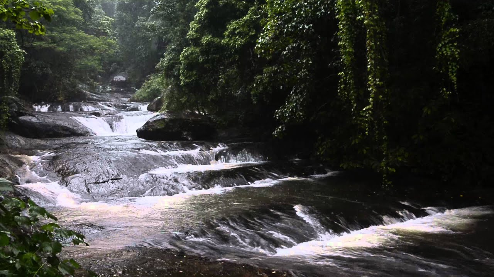

Places to visit
Kollam has been on the route map of spice traders for a very long time. Legendary explorers like Ibn Battuta to Marco Polo have talked about the prominence of Kollam district for centuries. Endowed with a long and scenic coastline, Kollam has many peaceful and scenic places to offer. Since it is located on the banks of Ashtamudi Lake, it is also one of the best places to go cruising in the backwaters.
-
Jatayu Earth Center
Also known as Jatayu Nature Park or Jatayu Rock, is a park and tourism centre at Chadayamangalam in Kollam district of Kerala. It stands at an altitude of 350m (1200ft) above the mean sea level. Jatayu Nature Park holds the distinction of having the world’s largest bird sculpture, which is of the Jatayu. -

Palaruvi Waterfalls
It is the 32nd highest waterfall in India. Palaruvi falls from a height of 300 feet and is situated at Aryankavu in the Kollam district of the south Indian state of Kerala.Palaruvi waterfall is located amidst the the thick dense forest of Thenmala range in Kollam Districtof Kerala India.
-

Ashtamudi Lake
It possesses a unique wetland ecosystem and a large palm-shaped (also described as octopus-shaped) water body, second only in size to the Vembanad estuary ecosystem of the state. Ashtamudi means 'eight braids' (Ashta : 'eight'; mudi : 'hair braids') in the local Malayalam language. The name is indicative of the lake's topography with its multiple branches.
Insteresting Fact
As the ancient city of Quilon, Kollam was a flourishing port during the Chera dynasty (c. 3rd century BC–12th century), and later became the capital of the independent Venad or the Kingdom of Quilon on its foundation in c. 825. Kollam was considered one of the four early entrepots in global sea trade during the 13th century, along with Alexandria and Cairo in Egypt, the Chinese city of Quanzhou
Contact Us
Kerala Tourism
contact@keralatourism.com
About us
Our top priority is to help you to find your perfect destination for your holiday.We focus on improving user experiecnces